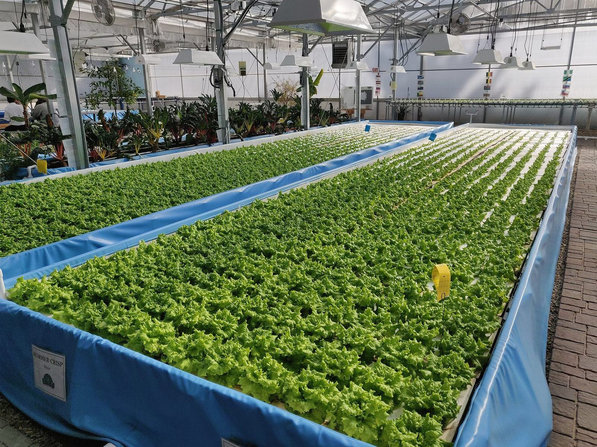

يقلّل الاستزراع المائي الدائري حجم الماء الذي تستخدمه المزرعة، لكنه لا يلغي الفضلات. فما تزال المواد الصلبة ومياه صرف مركّزة تغادر الحلقة. فإذا أُلقيت بلا معالجة، تكون المزرعة قد نقلت تلوثها إلى أنبوب أصغر فحسب. ولذا فإن معالجة مياه الصرف واسترداد العناصر المغذية جزء من ممارسة RAS المسؤولة، لا فكرة لاحقة اختيارية. وهما أيضًا، في ولايات قضائية كثيرة، شرطًا للسماح بالتشغيل أصلًا.
تشرح هذه المقالة ما هي مياه الصرف الناتجة عن الاستزراع، ولماذا ينبغي التقاط المواد الصلبة مبكرًا، وكيف يمكن استرداد العناصر المغذية بدل تخفيفها فحسب، وكيف تصف مناقصة منشورة عام 2025 في نانشا منشأة إعادة تدوير تبنيها الشركة بوصفها صاحبة المشروع. ولا تُعامل تلك المناقصة هنا دليلًا على أن وحدات معالجة مغلفة تُباع أصلًا في الخارج. بل تُعامل مشروعًا محليًا موثّقًا، بأرقام منشورة، يمكن للزائر أن يتعلم منه أي أسئلة يطرح.
ما الذي يغادر الحلقة الدائرية
كثيرًا ما يُمدح النظام الدائري لمعدل إعادة الاستخدام المرتفع. وذلك المدح عادل فقط إن تذكّر القارئ الباقي. يُضاف ماء التعويض. ويُخرج الغسيل العكسي للمرشحات والحمأة. ويُستبدل جزء من ماء العملية لضبط النترات أو اللون أو المواد العضوية الذائبة. والتيار الذي يغادر — ويُسمّى أحيانًا مياه الصرف أو النفايات السائلة أو التصريف — يحمل عناصر مغذية ذائبة، ومواد صلبة دقيقة أفلتت من المرشّح الأول، وأي أملاح أو بقايا معالجة أُضيفت. وهو أصغر من صرف مزرعة مرور واحد ذات كتلة حيوية مماثلة، لكنه أكثر تركيزًا.
والمواد الصلبة هي الكسر الأول الذي ينبغي التفكير فيه. فالعلف غير المأكول والبراز غنيان بالمادة العضوية والفسفور. فإذا بقيا في ماء التربية ذابا، واستهلكا الأكسجين، وحمّلا المرشّح البيولوجي. وإذا التُقطا حمأة، صارا مادة يمكن تخزينها أو نزع مائها أو تكميرها، أو، في بعض التصاميم، معالجتها إلى سماد. وتتوقف جودة تلك الحمأة على سرعة إخراجها وكمية الماء التي ما تزال تركبها. فحفرة رطبة لاهوائية ستشمّ، وتفقد نيتروجينًا على صورة أمونيا أو غاز، وتصير أصعب مناولة لاحقًا.
والفضلات الذائبة هي الكسر الثاني. فبعد أن يتمّ المرشّح البيولوجي عمله الهوائي، يكون كثير من النيتروجين حاضرًا على صورة نترات. ويبقى الفسفور والبوتاسيوم والمركبات العضوية الذائبة أيضًا. ويمكن لسرير استزراع سمكي نباتي أن يأخذ حصة من تلك العناصر. ويمكن لأرض رطبة منشأة، أو لمفاعل نزع نترات، أو لخطوة مياه عادمة تقليدية أن تأخذ المزيد. ولا ينبغي افتراض أن سرير نباتات واحد «يحل» صرف قاعة أسماك ثقيلة التغذية. فلا بد من حساب ميزانية النيتروجين، لا من الأمل فيها.
ويهتم المنظّمون بالكسرين معًا، ويهتمون بالممرضات وبالمواد الكيميائية الغريبة. وعلى مزرعة تستخدم الملح أو المطهرات أو الأدوية أن تعرف إن كانت تلك المواد ستصل إلى نقطة الصرف، وإن كانت مسموحة. وهذا سبب من أسباب أن مشورة المعالجة لا يمكن نسخها على عمى من بلد إلى آخر.
التقط مبكرًا، وعالج عن قصد
أرخص كيلوغرام من الفضلات لإدارته هو الذي ما يزال جسيمًا. وتوجد المرشحات الأسطوانية وأحواض الترسيب والفواصل الدوامية لالتقاط المواد الصلبة قبل أن تذوب. وتشمل الممارسة اليومية إفراغ تلك الأجهزة وشطفها وفق جدول، وإبقاء الحمأة الملتقطة بمعزل عن المطر وعن حلقة التربية. وزائر لا يعجب إلا بالأحواض النظيفة، ولا يسأل أبدًا أين تذهب الحمأة، لم يرَ المزرعة بعد.
وما إن تُلتقط الحمأة حتى يمكن تثخينها أو تجفيفها أو تكميرها أو هضمها. ولكل مسار تكلفة في الطاقة والأرض والعمل وضبط الرائحة. واسترداد العناصر المغذية — فكرة أن الفسفور والمادة العضوية ينبغي أن يصيرا منتجًا لا عبئًا — فكرة جذابة، لكنها لا تكون حقيقية إلا إذا وُجد مستخدم للمنتج، وطريقة تستوفي معايير زراعية أو تنظيمية، وميزانية كتلة ذات معنى. فكيس مكتوب عليه «سماد» لا يأخذه أحد ما يزال فضلات.
وتحتاج العناصر الذائبة إلى مجموعة أدوات مختلفة. والنباتات في ورشة استزراع سمكي نباتي أداة من هذا القبيل، ولها مزية إنتاج محصول ثانٍ. ولها أيضًا حدود في الضوء والمساحة وتحمّل الأنواع. فبيت بلاستيكي مليء بالخس لن يواكب تلقائيًا قاعة أسماك ثقيلة التخزين في منتصف الصيف إن لم تُصمَّم الأرقام معًا. وتشمل الخيارات الأخرى إعادة الاستخدام المائي أو الترابي، ونظم الطحالب، والأراضي الرطبة المنشأة، والمفاعلات الهندسية. ويتوقف الاختيار الصحيح على المناخ والأرض والتعريف القانوني للصرف.
وتنتمي الطاقة والموثوقية إلى التصميم نفسه. فمحطة مياه صرف تتوقف حين تتعطّل مضخة ستفيض أو تتجاوز. والاحتياط والتنبيهات وموضع لحفظ الفضلات زمنًا قصيرًا جزء من المعالجة، كما هي جزء من حلقة السمك. وينبغي أن تشمل زيارة العرض الركن غير اللامع حيث تُخزَّن الحمأة، لا أحواض التربية اللامعة فحسب.
مناقصة نانشا لمياه الصرف، تُقرأ بعناية
في 21 شباط/فبراير 2025، نشرت شركة قوانغتشو نانشا تشي هوي للتكنولوجيا الزراعية المحدودة مناقصة لمشروع إعادة تدوير لمياه صرف الاستزراع تبلغ مساحته نحو 38 مو. وكان سقف العطاء 2,084,328.12 رنمينبي. والهدف المنشور هو معالجة 100 طن من مياه صرف الاستزراع و950 كيلوغرامًا من النفايات الصلبة يوميًا، مع تحويل المواد الصلبة إلى سماد. وفي تلك الوثيقة تكون الشركة طرف الإنشاء والطرح — صاحبة المشروع — لا مقاولًا يبيع منشأة جاهزة لمشترٍ أجنبي.
وهذه الأرقام مفيدة لأنها محددة. فمائة طن من مياه الصرف في اليوم حمولة هيدروليكية معرَّفة. وتسعمائة وخمسون كيلوغرامًا من المواد الصلبة في اليوم كتلة معرَّفة من مادة يجب نقلها وتخزينها ومعالجتها. وثمانية وثلاثون مو بصمة أرض لمنشأة على مقياس الحديقة، لا زلاجة متراصة تتسع في حاوية شحن. ويخبر سقف العطاء القارئ أن هذا مشروع أعمال محلي ذو شأن، لا اختبار مقعد مختبري، وأنه أيضًا أصغر بكثير من الاستثمار الإجمالي المنشور للحديقة البالغ نحو 853 مليون رنمينبي. ولا يجوز مزج الرقمين في قصة مصنع تجاري عملاق.
ويصف الاعتماد البيئي لوادي الزراعة في منطقة الخليج تربية أسماك تجريبية ورصدية بحجم تجريبي سنوي مصمَّم يبلغ نحو 50 طنًا. ومحطة مياه صرف بحجم المناقصة أعلاه جزء من الإدارة البيئية للحديقة، لا ادّعاء بأن الشركة تصدّر أصلًا حزم معالجة. ويجوز للزوّار أن يطلبوا بحث مقصد التصميم ومسار السماد وحالة الإنشاء الحالية. وينبغي ألا يُقال لهم — وهذه المقالة لا تقول — إن خط منتجات تصدير مثبتًا قائم أصلًا بقوة مناقصة.
وقراءة المناقصات بعناية مهارة بذاتها. فالسقف ليس سعر عقد نهائيًا. والهدف المنشور ليس اختبار أداء قد اجتيز أصلًا. وصاحبة المشروع ليست هي نفسها صانع المعدات. وهذه الفروق تُبقي حديث التصدير أمينًا.
استرداد العناصر المغذية من دون شعارات
النيتروجين والفسفور ملوّثان في نهر وموارد في حقل، إن أمكن تسليمهما في صورة تستطيع النباتات استخدامها، في وقت ومكان ذوي معنى، ومن دون حمل ممرضات أو ملوّثات لا يقبلها المحصول المستقبل. وذلك «إن» هو عمل الاسترداد كله.
والتكمير والتجفيف هما الخطوتان الأوليان الأكثر شيوعًا للمواد الصلبة. فهما يقلّلان الحجم ويمكن أن يقلّلا الممرضات إن كفت الحرارة والزمن. وهما لا تنتجان تلقائيًا سمادًا معياريًا. واختبار العناصر والرطوبة وأي بقايا جزء من صنع منتج لا كومة. وفي ورشة استزراع سمكي نباتي، لا تصير حصة من النيتروجين الذائب حمأة أصلًا؛ بل تأخذها النباتات وتغادر أوراقًا. وذلك استرداد أيضًا، وينبغي أن يُحسب في الدفتر نفسه مع المواد الصلبة المكيّسة.
وثمة إغراء بوصف أي إعادة استخدام على أنها دورة مغلقة. والنظم الحقيقية تتسرب. وتفلت الغازات. ويُنزع بعض النيتروجين إلى الغلاف الجوي. ويرتبط بعض الفسفور بحمأة لا تُسترد كاملة. ويجلب ماء التعويض معادن جديدة. وميزانية كتلة أمينة تعترف بتلك الخسائر وما تزال تحاول أن ترسل أكبر قدر ممكن من مادة نافعة إلى محصول أو تربة، لا إلى جار في المصب.
وللمناطق الشحيحة الماء اهتمام خاص بهذا الحساب. فإذا أعاد مشروع خليجي استخدام ماء التربية مرات كثيرة، كان الصرف المتبقي بقية ثمينة، لا فضلات رخيصة. وقد يكون استعماله على نباتات تنسيق متحملة للملوحة، أو على محصول مضبوط، أو في أرض رطبة معالجة لاحقة، جزءًا من رخصة التشغيل. والمناخ والتربة والقواعد هي التي تقرر ما هو ممكن. وتصميم منسوخ من حديقة شبه استوائية رطبة في نانشا سيحتاج إلى إعادة فحص، لا إلى ترجمة فحسب.

أسئلة ينبغي أن يحملها المشتري
أين تذهب المواد الصلبة في يوم عادي، وأين تذهب حين يمتلئ القادوس؟ من يُسمح له بتلقّي منتج سماد أو تربة، وأي اختبارات مطلوبة؟ ما هو التدفّق التصميمي لمحطة مياه الصرف، وماذا يحدث عند ذروة التغذية أو بعد غسيل عكسي لمرشّح؟ كيف يُرصد الصرف، وإلى أي معيار؟ إذا كانت النباتات جزءًا من الاسترداد، فأي مساحة مطلوبة لكل وحدة علف، وماذا يحدث في موسم تنمو فيه النباتات ببطء؟
ويستطيع زائر نانشا أن يطرح تلك الأسئلة في سياق مشروع محلي موثّق وورشة تجريبية، من دون توقّع عرض تسليم جاهز للتصدير لا يدعمه السجل العلني. ومعالجة مياه الصرف جزء من أخذ الاستزراع الدائري على محمل الجد. واسترداد العناصر المغذية هدف جدير حين يسنده موضع لوضع العناصر وطريقة يمكن فحصها. وكلاهما ينتمي إلى الحديث التقني الأول، لا إلى حاشية بعد أن تكون الأحواض قد اشتُريت أصلًا.
عمليات الوحدات بلغة أوضح
قطار مياه الصرف عادة تسلسل. أولًا، تُخرج المواد الصلبة التي ما يزال يمكن ترسيبها أو غربلتها، حتى لا تُخنق المضخات والمفاعلات اللاحقة. ثانيًا، تُخفَّض المادة العضوية التي تستهلك الأكسجين في نهر، غالبًا بالتهوية والبكتيريا، وأحيانًا في حوض أو بحيرة أو مفاعل Packed. ثالثًا، تُخفَّض العناصر المتبقية — ولا سيما النيتروجين والفسفور — أو تُوجَّه إلى محصول. رابعًا، إن اقتضى الترخيص ذلك، تُخفَّض الممرضات والمواد الصلبة المتبقية مرة أخرى قبل أن يغادر الماء حدود المزرعة. وتتغيّر أسماء الآلات. أما ترتيب المشكلات فلا يتغيّر.
وتُوصف الأراضي الرطبة المنشأة والقنوات المزروعة أحيانًا كأنما هي بلا صيانة. وليست كذلك. فالنباتات تذبل، والقنوات تنسدّ، والبعوض يتكاثر، وينخفض الأداء في موسم بارد أو شديد الجفاف. ويمكن أن تظل اختيارًا حسنًا حيث تتوافر الأرض وتكون الحمولة قد صُمّمت للمساحة. وهي اختيار رديء حيث تُستخدم ستارًا تزيينيًا لصرف لم يُقس أصلًا.
ونزع النترات، أي تحويل النترات إلى غاز نيتروجين، خطوة متخصصة. وعادة ما تحتاج إلى مصدر كربون ومنطقة منخفضة الأكسجين. وإذا أُسيء تنفيذها يمكن أن تنتج نيتريتًا من جديد، أو روائح، أو رقمًا هيدروجينيًا غير مستقر. وينبغي أن يصممها من فعلوها مع مياه عادمة أو مع صرف استزراع، لا أن تُضاف شعارًا على ملصق. ويمكن لموقع عرض أن يقول على نحو مفيد إن كان يستخدم مثل هذه الخطوة، أو إن كانت ما تزال في التصميم، أو إن كان النترات يُضبط أساسًا بالنباتات وباستبدال الماء.
وجودة السماد سؤال سوق بقدر ما هي سؤال تقني. فالمزارعون الذين قد يستخدمون منتجًا قائمًا على الحمأة سيسألون عن الملح، وعن المعادن الثقيلة، وعن الممرضات، وعن الرائحة، وعن مدى انتظام محتوى العناصر من دفعة إلى دفعة. ومناقصة تذكر تحويل المواد الصلبة إلى سماد بيان مقصد. والاختبارات والمستخدمون والإمداد اللوجستي هي ما يحوّل المقصد إلى مسار استرداد حقيقي. ويجوز للزائر أن يسأل أي تلك القطع قائم أصلًا وأيها ما يزال يُبنى.
التنظيم والجيران والمناخ
وتختلف قواعد الصرف. فبعض المواضع تحدّ الطلب البيوكيميائي على الأكسجين، والمواد الصلبة العالقة، وقائمة من العناصر. وبعضها يضيف قواعد خاصة بأنواع أو بالمضادات الحيوية. وبعضها لا يكاد يملك إنفاذًا روتينيًا حتى يشكو جار. وحديث تصدير يتجاهل ترخيص المشتري حديث ناقص. ومنشأة نانشا تُصمَّم في إطار إجراءات المشاريع والبيئة الصينية، بما في ذلك اعتماد بيئي يؤطّر أصلًا التربية التجريبية للحديقة. وسيحتاج مشروع خليجي أو جنوب شرق آسيوي إلى تقييمه الخاص. والنقل المفيد هو عادة القياس ومقايسة المعالجة على الحمولة، لا صورة طبق الأصل من ترخيص.
والرائحة والمظهر جزء من أن تكون جارًا. فحظيرة حمأة في الشمس، أو بحيرة تصير خضراء سوداء، أو ساحة سماد تتسرب إلى ممر، ستحدد المزرعة في ذهن الجمهور أسرع من أي كتيّب تقني. والموقع والأغطية والإخراج المنتظم جزء من تصميم المعالجة. وفي حي كثيف شبه حضري مثل أجزاء من نانشا، يكون هذا الدرس قريبًا في اليد. وفي موقع صحراوي ناءٍ قد يكون الجار أبعد، لكن العاملين ما يزالون يعملون إلى جانب الفضلات، والريح ما تزال تحمل رائحة.
والمناخ يغيّر المنشأة. فالتبخر في منطقة جافة يمكن أن يركّز الأملاح في الأحواض والبحيرات. والمطر الغزير في صيف شبه استوائي يمكن أن يخفّف، ويفيض، ويغسل ساحات الحمأة إلى قنوات. ويجب أن يقول التصميم ماذا يحدث في أسوأ يوم عادي، لا في صباح زيارة هادئ فحسب. والتخزين الاحتياطي، وتنبيهات ارتفاع الماء، وقاعدة لوقف العلف أو النقل أثناء عاصفة، جزء من إدارة مياه الصرف، كما هي جزء من رعاية الأسماك.